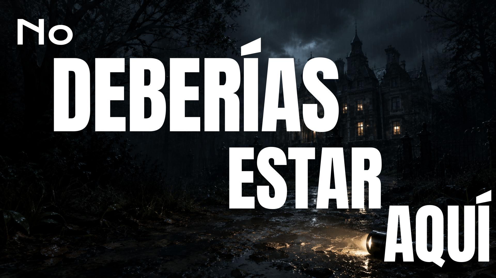

Psychological Horror / Survival / Stealth
Videojuego de horror psicológico desarrollado en Unity. Una experiencia de tensión y sigilo construida alrededor de sistemas de interacción, comportamiento enemigo y exploración.
Ver en itch.io ↗